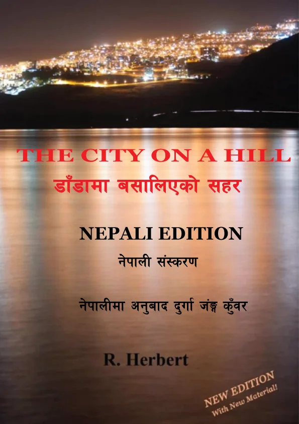

The City on a Hill
डाँडामा बसालिएको सहर
The City on a Hill is a practical and inspiring guide to the parables of Jesus. Drawing on their historical and cultural background, this book explains the deeper meaning of Christ's teachings and shows how they can be applied to everyday Christian life. Ideal for personal Bible study, sermon preparation, family devotions, and small group discussions.